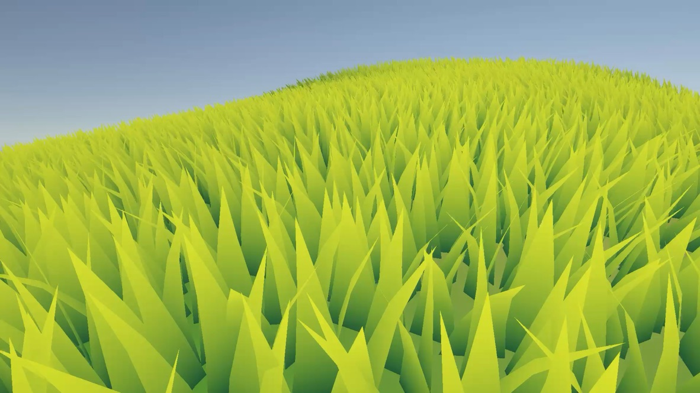
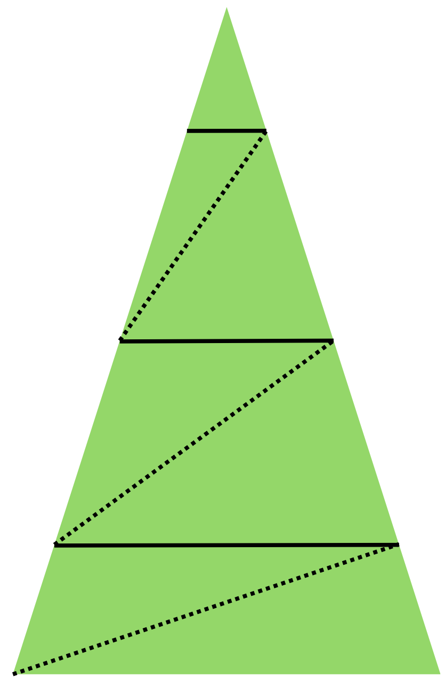

A Unity URP grass system that generates all blade geometry on the GPU in parallel using a compute shader, one thread per source triangle, output streamed to an append buffer, drawn in a single indirect draw call.

One blade per triangle
Each thread in the compute kernel handles one triangle from the source mesh. It finds the triangle center in
world space, builds a tangent-to-world matrix from the triangle edges, and sprouts a blade from that point.
Blade width and height are randomized per position using randNegative1to1.
Building sections from a single strip of triangles
A blade is not one triangle. It is a strip of square sections stacked along the height of the blade. For each
segment, the compute shader places two vertices at the same height v, then adds a final tip vertex.
Adjacent groups of three vertices become the draw triangles appended to the buffer. As v rises toward
the tip, the horizontal offset u converges on 0.5, tapering the blade. Segment count is reduced at
distance via LOD so far blades use fewer sections.

Bend, twist, and wind
Rotation is applied in order: bend, twist, convert to world space, then wind. Bend increases toward the tip using
pow(v, _BladeCurvature). Wind rotation uses the same height multiplier v, so the base
stays anchored and the tip moves the most. Wind strength comes from procedural gradient noise sampled in world
space and scrolled over time.
Shading and the Unity editor
The fragment shader lerps from base color to tip color by height, darkens albedo where wind strength is high,
and blends lit and shadowed areas using directional light and a custom shadow tint. On the C# side,
ProceduralGrassRenderer uploads mesh data, dispatches the compute shader each frame, and draws
with Graphics.DrawProceduralIndirect. A custom editor exposes grass and wind settings and can
generate a tileable Perlin noise texture for wind.